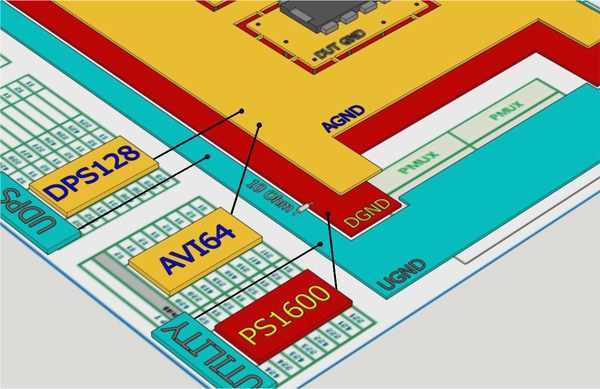
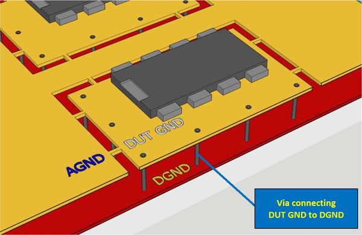
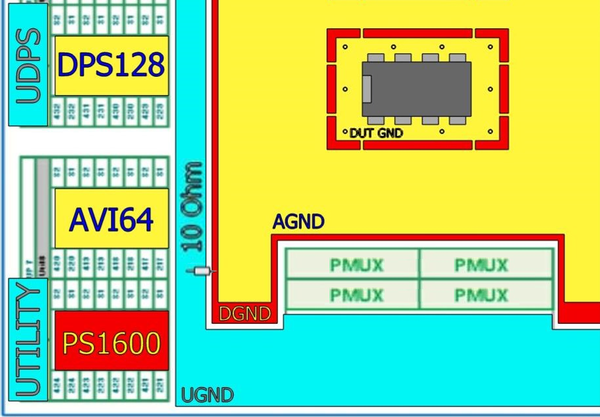

Grounding concept for power applications
When designing DUT boards, developing a proper ground concept is critical. For mixed signal power applications, we recommend the following structure of grounding.
Force ground
Three ground planes are to be provided:
- "UGND" is the ground plane for all Utility lines, Utility power supplies and other resources of the V93000 infrastructure.
- Digital test head cards are to be connected to the digital ground plane "DGND".
- Analog test head cards, DC Scale cards and DPS-slot power supplies should be connected to the analog ground "AGND".
A 10 Ω resistor of ≥ 1 W connects the "DGND" plane to the "UGND" plane.

Note Ground sense lines are not considered in the graphics above. Ground
sense lines are typically routed directly to the DUT but circumstances may
vary.
The following table shows some examples how the common ground of the cards should
be connected:
| Test head card | Pins | Ground plane |
|---|---|---|
| Pin Scale PS1600 card | All ground pins | DGND |
| DC Scale AVI64 card | GND | AGND |
| DC Scale DPS128 / DPS64 card | GND | AGND |
| DC Scale XPS256 card | GND | AGND |
| Utility power supplies | UGND and UGNDs | UGND |
| Internal Utility Power Supply (SE-UDPS) | G1 … G4 | May be connected to any GND (as needed) |
DUT ground
DUT GND is a localized ground area specific to each DUT.
DUT GND is connected to AGND and DGND via multiple low resistive paths. This may be any combination of traces (AGND shown) or vias (DGND shown).

Ground planes top view

Functional changes
- Introduced in SmarTest 7.5.2 / 8.2.3